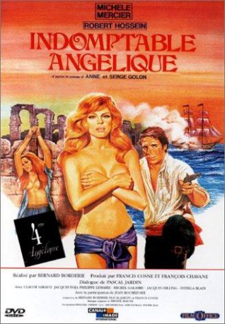

gesehen am 28.01.2018
gesehen am 28.01.2018Alternativ: Angelique 4 gesehen am 28.01.2018
 
 IMDB-Wertung: 6.8 / 10
IMDB-Wertung: 6.8 / 10  Metascore:
Metascore: 
This is the fourth film of the Angélique series. Having discovered that her beloved is still alive, Angélique boards a galley ship and sails the Mediterranean. However, their ship is attacked by pirates and Angélique once more finds herself in peril...
Jahr: 1967
Dauer: 85 Minuten
FSK: 16
Land: Frankreich Studio: Gloria Filmverleih AGTonspuren:
Untertitel:
Auflösung: 1080p (1920x816) Größe: 5898 MB
Genre: Abenteuer
Regisseur: Bernard Borderie
Drehbuch: Hasraf Dulull
Soundtrack: Michel Magne
Darsteller:
 Michèle Mercier als Angélique de Peyrac
Michèle Mercier als Angélique de Peyrac Robert Hossein als Jeoffrey de Peyrac
Robert Hossein als Jeoffrey de Peyrac Ettore Manni als Jason
Ettore Manni als Jason Sieghardt Rupp als Millerand
Sieghardt Rupp als Millerand Arturo Dominici als Mezzo Morte (uncredited)
Arturo Dominici als Mezzo Morte (uncredited) Paul Muller als Knight at auction (uncredited)
Paul Muller als Knight at auction (uncredited) Omero Capanna als Soldier (uncredited)
Omero Capanna als Soldier (uncredited)Datei: X:\6-Hexalogie(A-Z)\Angelique\Angélique 4 - Unbezähmbare Angélique (1967, FSK16, 1920x816).mkv seit 09.01.2018
Festplatte: HD Collection-3(N-Z)-6(A-Z)
 Es gibt insgesamt 9 Filme in der Gruppe '6-Hexalogie(A-Z)\Angelique'
Es gibt insgesamt 9 Filme in der Gruppe '6-Hexalogie(A-Z)\Angelique'